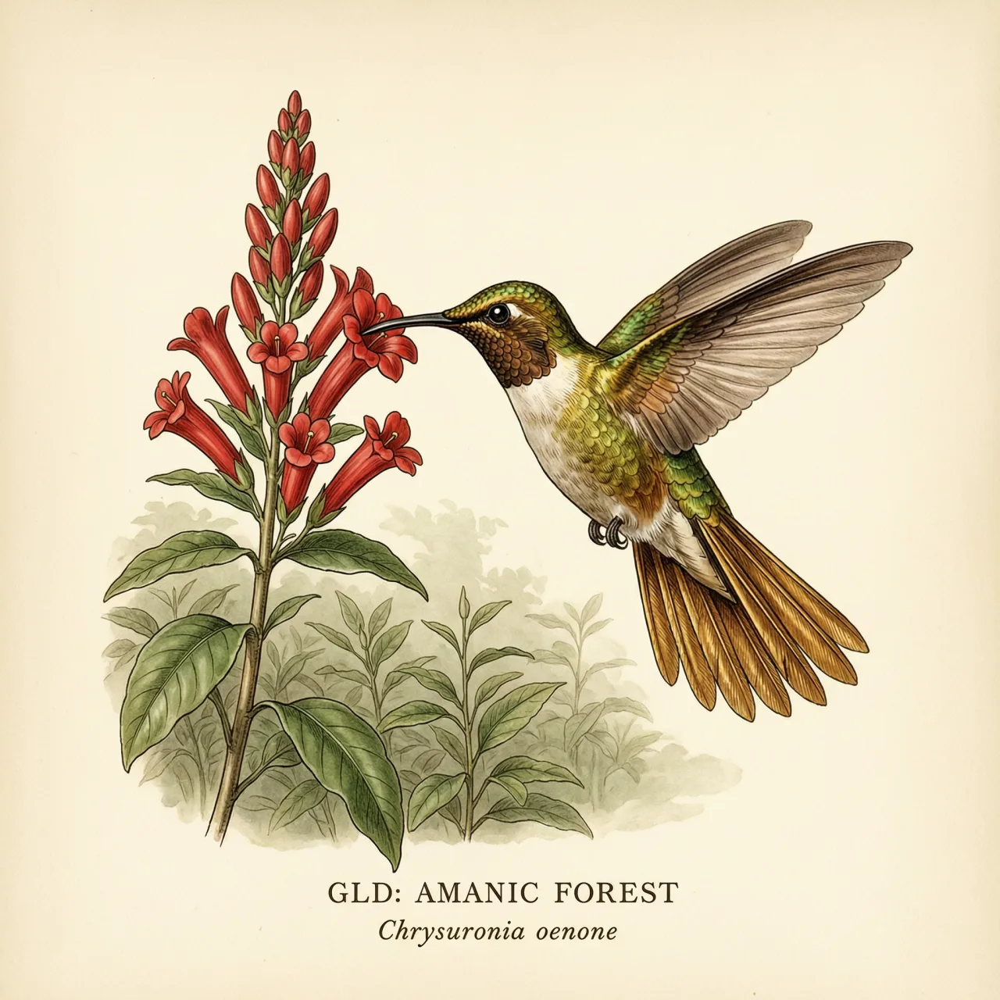
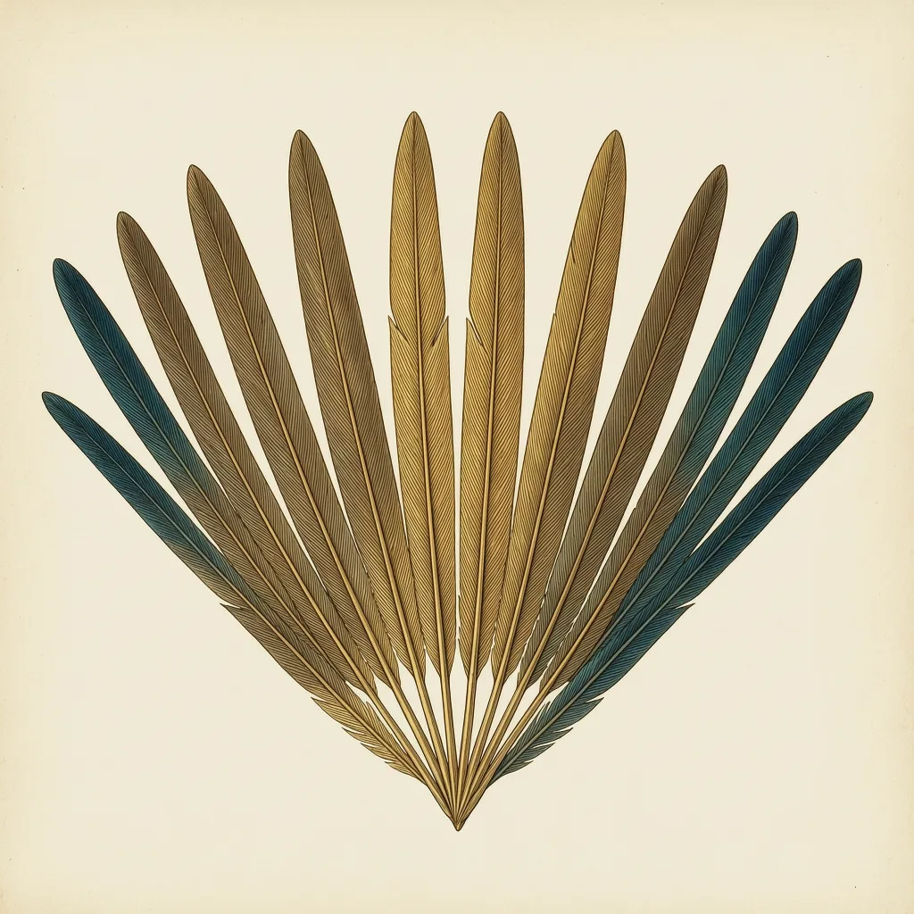

金尾蜂鸟是新热带界的蜂鸟种类，雄鸟背泛金绿色、整片尾铜金色，雌鸟颜色朴素得多。它出入于巴西大西洋森林的边缘、空地与花园，悬停在半空啜饮花蜜。从选址筑巢到孵卵育雏全部由雌鸟独自承担，雄鸟求偶之后便离开。
有一片开花的植株，就可能撞见金尾蜂鸟。它的分布以巴西大西洋森林为轴心，沿着东南海岸那条窄窄的林带展开。但金尾蜂鸟并不常在树冠合拢的林子里做客，它偏爱林缘、林窗和人居旁的花园——这些半开半林的去处，开花植物来得又密又续。白天光线充足时，它会在花丛前悬停，背部泛出金绿色的光泽，像一块会反光的碎铜。
求偶一结束，顶着铜金色尾羽的雄鸟就转身离开，之后的选址、筑巢、孵卵、喂食，全部由雌鸟独自承担。巢安在一根细枝的分叉上，小小的杯状，里面躺着两枚浅色的小卵。雌鸟要在巢与附近花丛之间来回穿梭：出去吸几口花蜜，很快又飞回来，雏鸟长到快要出飞的那几天，守在巢边的仍然只有它一个。
金尾蜂鸟身上最奇怪的是它的分布图。主力种群住在巴西东南沿海的大西洋森林，另外一小撮同类却待在数千公里外的圭亚那地盾，落在罗赖马山一带的砂岩台地上；中间隔着大片没有金尾蜂鸟的低地，两片分布几乎没有连接。像是同一个家，一支守着海岸森林，另一支搬进了云雾里的高台，而两支队伍至今仍然算作同一个种。台地的云雾中，同一片铜金色的尾巴照样从凤梨的硬叶间一闪而过。
